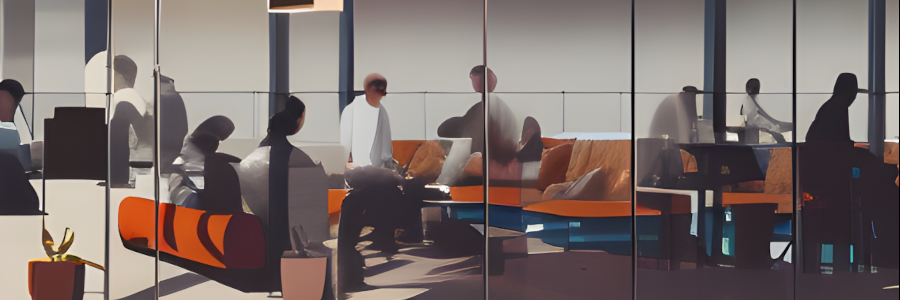

ABOUT ME
Hi! I am Idoia, a front-end and back-end developer with over 15 years of experience in web design and development. I specialize in HTML, CSS, and JavaScript and have worked on large e-commerce platforms and startups. I'm passionate about my job and have excellent communication skills. In my free time, I enjoy learning more about ML, GANS, Stable diffusion.
On this page, you'll find some of my past projects that showcase my skills as a front-end developer. I have an eye for detail and believe in pixel-perfect design. I'm always up for a challenge and love solving problems with creative solutions. Communication is key in web development, and I pride myself on being an excellent communicator.
Location: Remote projects undertaken.
Apps: Deployed apps via Streamlit.
PORTFOLIO
SNAPSHOTS
I have over 15 years of experience in web development. I started out as a webmaster in 90s and then worked for a large international interactive agency called iXL as a senior front-end developer. I built custom websites for blue-chip clients such as British Airways, Dupont, UBS, Cisco, and Virgin Atlantic.
After the web boom burst, I became certified in MCSD and started freelancing using both back-end and front-end skills. I have a university degree in Artificial Intelligence which has always been an interest of mine.

Virgin Atlantic

British Airways

Dupont

UBS

Blueyonder – Telewest

Diageo

ERP Maestro

Gamyte
GET IN TOUCH
Currently located in New York.If you're interested in working together or have any questions about my work, please don’t hesitate to get in touch.
Let me know if you are interested in receiving my resume and we can talk soon.
Alternatively you can fill in the contact form on this site.
BLOG: "Photo restoration using AI and GIMP"
The following will show how to restore photographs keeping the essence of the original photograph. Using AI sometimes add spurious results like adding make-up etc. and in this exercise the aim is to keep the spirit of the original photograph.- Remove the background of the original image online. my FREE background remover app.

- Create a new background using Stable Diffusion online. www.plaground.ai (FREE)

- Merge the two pictures Using a graphic design application, I used GIMP.
- Import the new created picture to Stable Diffusion online and pass at 95 or higher.

- Use inpaint in the Stable Diffusion app to fix the edges of the photograph and edit if needed.

- You have created a beautiful restored photograph that keeps the essence of the individuals in the original photo. Thank you for following up.

Well done.